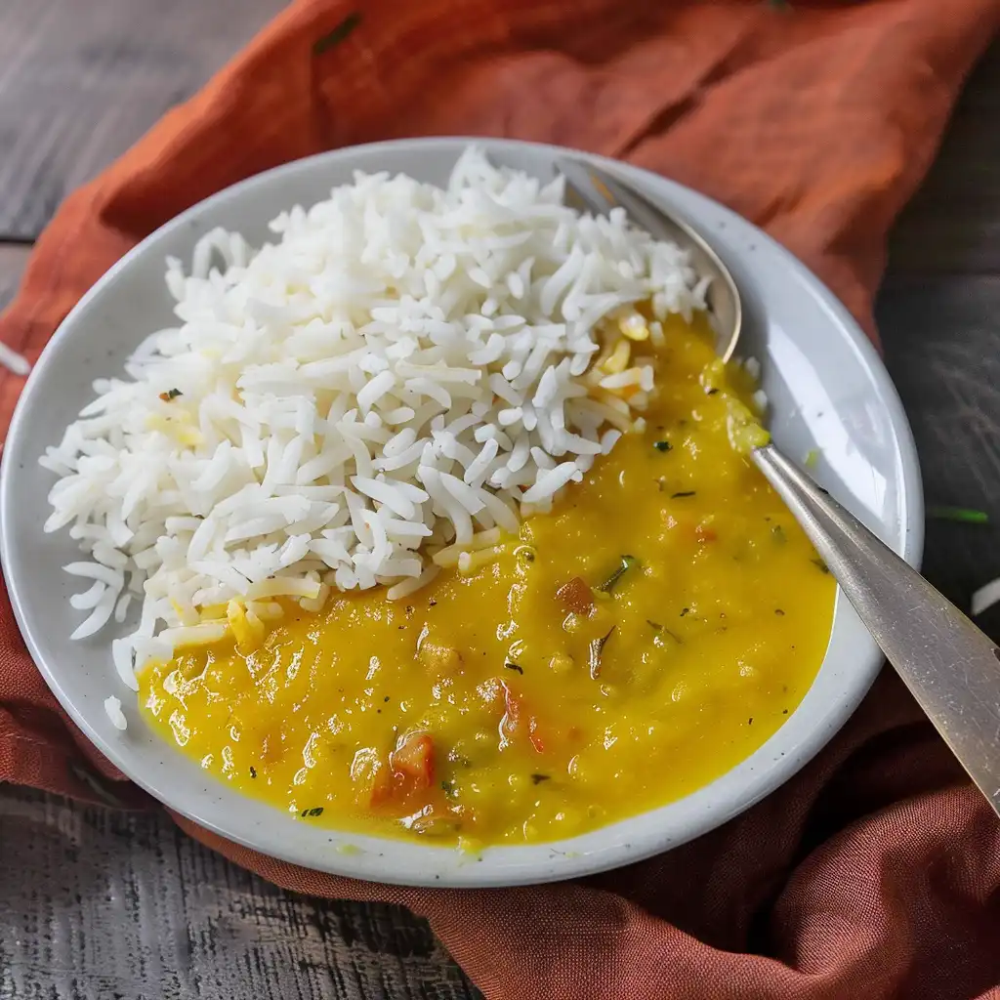

Dal Chawal

Description
Lentils are an amazing source of protein. Along with rice, rich source of carbohydrates, you can prepare delicious and yummy simple dal chawal. Adding required butter, supplements the nutrient, fats too.
Ingredients
- 1/4 cup rice
- 2 tsp arhar dal
- 1.5 cup water
- 1/4 tsp oil and ghee each
- salt to taste
Steps
-
Wash and soak the rice along with the dal in water for 20 mins. Drain the water and keep aside
-
In a pressure pan, add oil and saute the soaked rice and dal for 2 minutes. Add salt as per taste and water. Pressure cook for 3 whistles.
-
Once the steam cools down, add pinch of butter on top and give the dal and rice a mix. Keep the consistency semi liquid.
-
Serve in a plate.